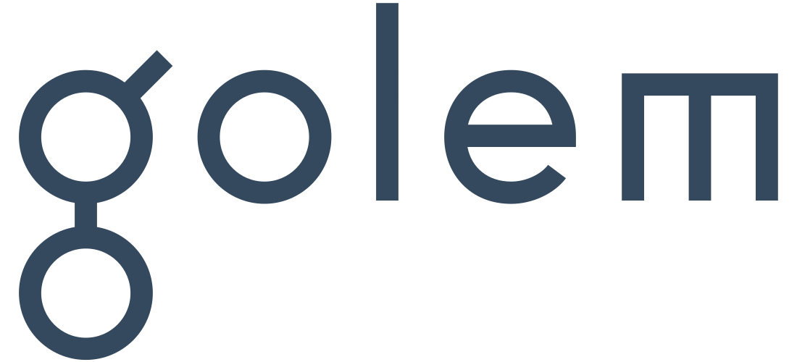

<!DOCTYPE html>
<html lang="en">
<head>
  <meta charset="UTF-8">
  <title>Golem.Network wiki</title>
  <link rel="icon" href="favicon.ico">
  <meta http-equiv="X-UA-Compatible" content="IE=edge,chrome=1" />
  <meta name="description" content="Golem Network official documentation">
  <meta name="viewport" content="width=device-width, user-scalable=no, initial-scale=1.0, maximum-scale=1.0, minimum-scale=1.0">
  <link rel="stylesheet" href="lib/golem.css">
</head>
<body>
  <div id="app"></div>
  <script>
    window.$docsify = {
      loadSidebar: true,
      loadNavbar: true,
      search: 'auto', 
      maxLevel: 1,
      subMaxLevel: 3,
      auto2top: true,
      autoHeader: true,
      themeColor: '#0e8bff',
      'flexible-alerts': {
      style: 'callout'
      },
      alias: {
      '.*/_sidebar.md': '_sidebar.md'
    },
      name: '',
      repo: ''
  }
  </script>
  <script src="//cdn.jsdelivr.net/npm/docsify-katex@latest/dist/docsify-katex.js"></script>
  <link rel="stylesheet" href="//cdn.jsdelivr.net/npm/katex@latest/dist/katex.min.css">
  <script src="lib/docsify.min.js"></script>
  <script src="//unpkg.com/docsify/lib/plugins/zoom-image.min.js"></script>
  <script src="//unpkg.com/docsify/lib/plugins/search.min.js"></script>
  <script src="https://unpkg.com/docsify-plugin-flexible-alerts"></script>
  <script src="//unpkg.com/docsify-copy-code"></script>
  <script src="//unpkg.com/docsify-pagination/dist/docsify-pagination.min.js"></script>
  <script src="//unpkg.com/prismjs/components/prism-git.min.js"></script>
  <script src="//unpkg.com/prismjs/components/prism-bash.min.js"></script>
  <script src="//unpkg.com/prismjs/components/prism-python.min.js"></script>
  <script src="//unpkg.com/prismjs/components/prism-json.min.js"></script>
</body>
</html>
